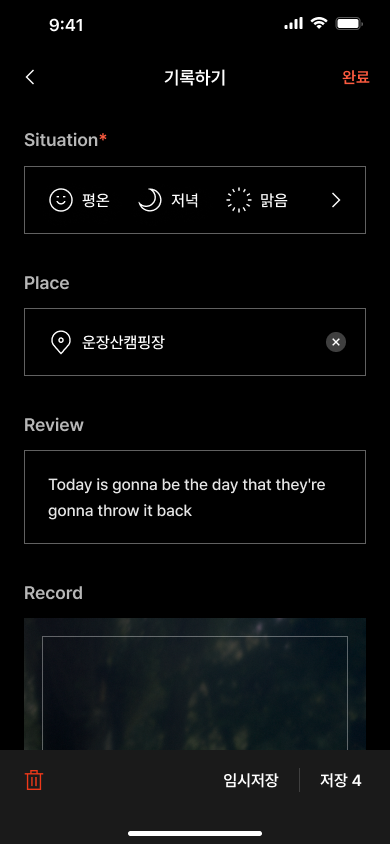
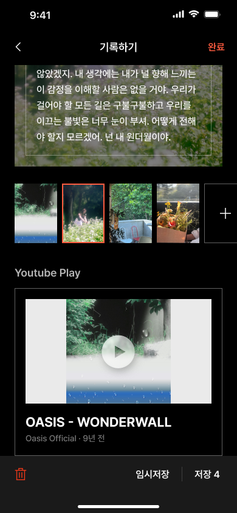

<!DOCTYPE html>
<html lang="en">
  <head>
    <meta charset="UTF-8" />
    <meta name="viewport" content="width=device-width, initial-scale=1.0" />
    <title>Document</title>
  </head>
  <body>
    <!-- <style>
      img {
        opacity: 0;
        transition: all 0.5s;
        /* margin-top: 1000px; */
      }
    </style>
    <div>dssss</div>
    
    
    
    
    <script>
      let observer = new IntersectionObserver((e) => {
        e.forEach((박스) => {
          if (박스.isIntersecting) {
            박스.target.style.opacity = 1;
          } else {
            박스.target.style.opacity = 0;
          }
        });
      });
      let img = document.querySelectorAll("img");
      observer.observe(img[0]);
      observer.observe(img[1]);
      observer.observe(img[2]);
      observer.observe(img[3]);
    </script> -->
    <!-- <style>
      * {
        transition-duration: 0.8s;
      }
      body {
        margin: 0;
        padding: 0;
      }
      .section {
        height: 510.967px;
        /* overflow: scroll; */
      }
      .content {
        /* width: 100%; */
        font-size: 32px;
        text-align: center;
      }
      img {
        width: 236.11px;
        height: 510.967px;
      }
      .wrap {
        position: fixed;
        display: flex;
        justify-content: center;
        margin: auto;
      }
    </style>

    <!-- <div class="section">
      <div
        class="content"
        style="font-size: 32px; text-align: center; background-color: white"
      >
        
      </div>
      <div
        class="content"
        style="font-size: 32px; text-align: center; background-color: skyblue"
      >
        2
      </div>
      <div
        class="content"
        style="font-size: 32px; text-align: center; background-color: pink"
      >
        3
      </div>
      <div
        class="content"
        style="
          font-size: 32px;
          text-align: center;
          background-color: palegoldenrod;
        "
      >
        4
      </div>
      <div
        class="content"
        style="font-size: 32px; text-align: center; background-color: violet"
      >
        5
      </div>
    </div> -->

    <!-- <div class="wrap">
      
      <div class="section section--page">
        <div class="scroll">
          
        </div>
        <div class="scroll">
          
        </div>
        <div class="scroll">
          
        </div>
      </div>
    </div>
    <script>
      window.onload = function () {
        const elm = document.querySelectorAll(".scroll");
        const elmCount = elm.length;
        elm.forEach(function (item, index) {
          item.addEventListener("mousewheel", function (event) {
            event.preventDefault();
            let delta = 0;

            if (!event) event = window.event;
            if (event.wheelDelta) {
              delta = event.wheelDelta / 120;
              if (window.opera) delta = -delta;
            } else if (event.detail) delta = -event.detail / 3;

            let moveTop = window.scrollY;
            let elmSelector = elm[index];

            // wheel down : move to next section
            if (delta < 0) {
              if (elmSelector !== elmCount - 1) {
                try {
                  moveTop =
                    window.pageYOffset +
                    elmSelector.nextElementSibling.getBoundingClientRect().top;
                } catch (e) {}
              }
            }
            // wheel up : move to previous section
            else {
              if (elmSelector !== 0) {
                try {
                  moveTop =
                    window.pageYOffset +
                    elmSelector.previousElementSibling.getBoundingClientRect()
                      .top;
                } catch (e) {}
              }
            }

            const body = document.querySelector("html");
            window.scrollTo({ top: moveTop, left: 0, behavior: "smooth" });
          });
        });
      };
    </script> -->
  </body>
</html>
